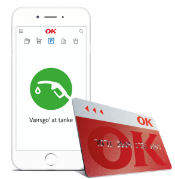
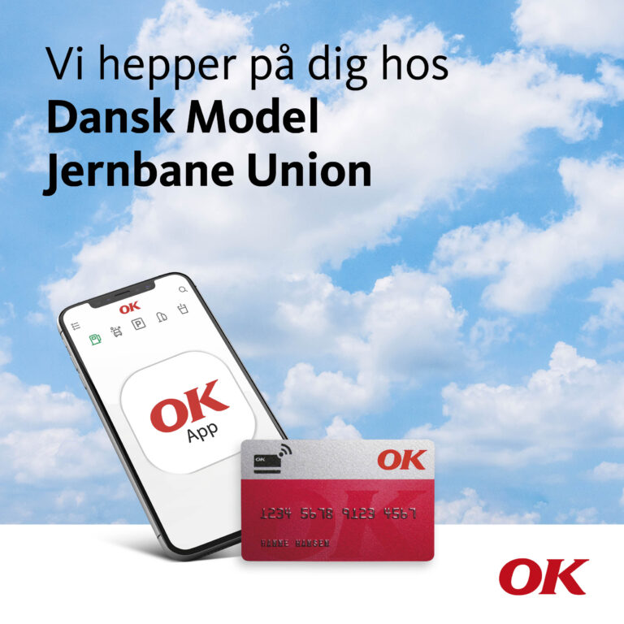
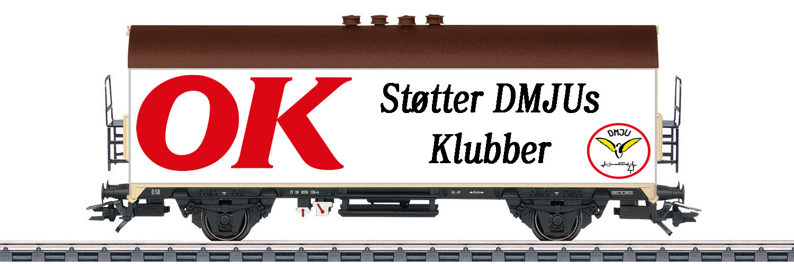

Hjælpevognen
Opgørelsen for det sidste år er kommet, perioden løber fra sep. til sep. det udbetalt beløb i 26 kom op på 2508,09 kr, så det samle beløb på kontoen er nu oppe på 3922,38 kr.
DMJU har indgået en sponsoraftale med OK, så du kan støtte Dansk Model Jernbane Union, hver gang du tanker. Og vigtigst af alt, det koster dig ikke ekstra at støtte vores forening – OK betaler hele beløbet.
Du støtter vores forening med 5 øre/liter – uanset om du bestiller et OK Kort eller betaler med OK-appen. Når nye kunder har tanket 500 liter indenfor et år, får vores forening en ekstra bonus på 200 kr.
Bestil dit OK kort
Bestil et OK Kort på www.ok.dk/lokalsporten. Hvis du vælger at tanke med OK-appen, så finder du den i App Store eller Google Play.
Har du allerede et OK Kort? Så ring til OK på 70 10 20 33 og fortæl dem, at du gerne vil støtte Dansk Model Jernbane Union nu. Og så sørger de for at ændre det.

Støt ekstra med OK El
Har du et OK Kort kan du fordoble støtten til vores forening. Med el fra OK kan du støtte med 5 øre ekstra pr. liter, hver gang du tanker. Det er nemt og hurtigt at skifte elselskab.

Kontakt
Bare ring til OK på 70 10 20 33, så sørger de for det hele.
Har du spørgsmål, er du velkommen til at kontakte Willy Nielsen på 22271777 eller kasserer(@)dmju.dk.
Hvordan virker det?
DMJUs aftale med OK løber fra Oktober 2024 til Oktober 2025, hvor vi så vil vide hvor mange penge der er indløbet på vores konto, fra første Januar 2026 vil vores Hjælpevogn kunne uddele midler til klubber.
Hjælpevognen er en måde hvor man med et OK benzin kort eller app, kan støtte klubber under DMJU. Alle støtte kroner som kommer fra OK eller andre sponsere vil gå til klubber, er en klub af en eller anden grund i nød, kan de søge om midler ved DMJU som vil ser på sagen. En gang om året vil man se hvor mange midler som der er i Hjælpevognens kasse, DMJU vil man vurdere hvor mange midler der kan udles til alle klubber under DMJU, alle klubber vil få tildelt det samme beløb.
Det er ikke alle medlemmer som har et OK kort, men som sikker gerne vil støtte Hjælpevognen, det kan nu gøres på en Mobilpay konto til samme formål, alle beløb om det er 5 kr. eller mere skal være velkommen, og vi siger tak på forhånd, har man spørgsmål til ting omkring Hjælpevognen så kontakt kassereren.
Mobilpay konto: #87710 eller brug QR koden. Husk på at ingen kontingenter til DMJU fra klubber, vil ikke gå til Hjælpevognen.
Støtte
Der er 2 muligheder for støtte:
- Støtte til nødlidende klubber
- Støtte til andre klubber
Ad 1: Kommer en klub i økonomisk bekneb i forbindelse med f.eks. en vandskade, kan der ansøges om et engangstilskud (her kan det drøftes om der skal ansøges om et konkret beløb eller om der ydes tilskud efter en bedømmelse fra DMJU) alle ansøgninger vil blive drøfte på det først kommende bestyrelsesmøde i DMJU.
Ansøgning klik her.
Ad 2: Her søges tilskud efter de gængse normer for sponsorater fra almennyttige fonde, dvs. at klubberne kan fremsende en ansøgning om støtte, som derefter tildeles efter afgørelse fra DMJU. Beløbets størrelse afgøres suverænt af DMJU og kan til enhver tid afvige fra det beløb, som måtte være angivet i ansøgningen.
